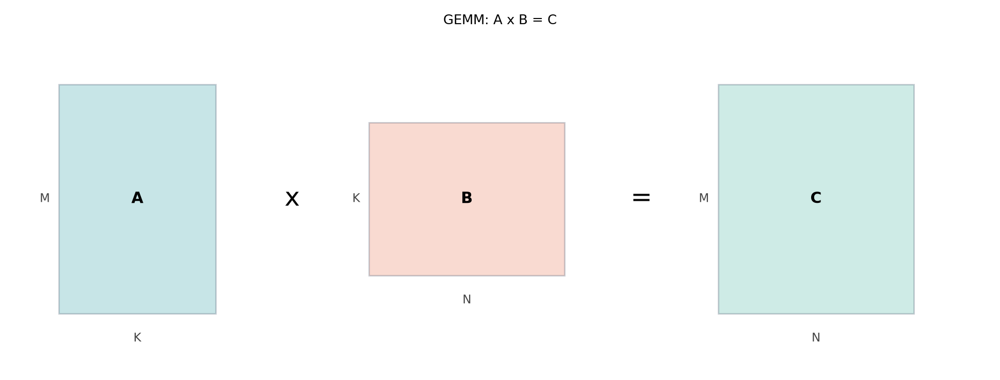

A sűrű mátrixszorzás (dense GEMM) a tudományos számítás, a gépi
tanulás és a jelfeldolgozás egyik legalapvetőbb építőköve. A
C = alpha * A * B + beta * C alakú művelet a BLAS (Basic
Linear Algebra Subprograms) szabvány szerint GEMM néven
ismert, ahol A mérete M × K, B
mérete K × N, C mérete pedig
M × N. A GPU-k ezen a területen kiválóan teljesítenek, mert
a GEMM számítási intenzitása (compute intensity) magas, és a
párhuzamosság könnyen kihasználható. Ebben az alfejezetben felépítjük a
naiv kerneltől a shared memory tilenen és a register tilenen át a
gyakorlatban használt, rendkívül optimalizált könyvtárakig: a
cuBLAS-ig és a CUTLASS-ig.

A legegyszerűbb CUDA implementációban minden szál a C
mátrix egyetlen elemét számítja ki. A szál a saját
(row, col) indexét a block- és thread-indexekből számítja,
majd egy belső ciklusban végigfut a K dimenzión, és
összegzi a szorzatokat. A tárolás sor-fő (row-major), tehát
A[row * K + k] és B[k * N + col] formában
címezzük az elemeket.
// CUDA C++ (C++17), nvcc (verzió ellenőrizendő)
// Naiv GEMM: minden szál egy kimeneti elemet számol
__global__ void naive_gemm(const float* A, const float* B, float* C,
int M, int N, int K) {
int row = blockIdx.y * blockDim.y + threadIdx.y;
int col = blockIdx.x * blockDim.x + threadIdx.x;
if (row < M && col < N) {
float sum = 0.0f;
for (int k = 0; k < K; ++k) {
sum += A[row * K + k] * B[k * N + col];
}
C[row * N + col] = sum;
}
}A kernel elindítása előtt a gridet és a blockot úgy választjuk meg,
hogy lefedjék a kimeneti mátrixot. Például
blockDim = (16, 16) esetén
gridDim = ((N + 15) / 16, (M + 15) / 16).
A naiv implementáció működik, de teljesítménye messze elmarad a
hardver lehetőségeitől. Ennek fő oka a globális memória túlzott
forgalma: minden kimeneti elem kiszámításához a szál K
darab A- és K darab B-elemet
olvas. Összesen tehát 2 * M * N * K globális olvasás
történik, miközben a számítási munka is 2 * M * N * K
lebegőpontos művelet (FLOP). A compute-to-global-memory arány tehát
körülbelül 1, ami rendkívül alacsony, és a kernelt a memória
sávszélessége korlátozza. Ráadásul a memória-hozzáférések nem mindig
coalescingeltek: az A mátrix elemeit ugyan a szálak közösen
olvassák (broadcast), de a B mátrix hozzáférésénél a
szomszédos szálak col irányban folytonos címet érnek el,
ami részben kedvező, azonban az ismételt olvasások miatt a sávszélesség
pazarló.
A hatékonyság drasztikusan javítható, ha a mátrixokat kisebb
tile-okra (csempékre) bontjuk, és ezeket a gyors shared
memory-ba töltjük. A block tiling alapötlete: minden
block egy BM × BN méretű C-tile-t számol ki. A
K dimenzió mentén BK szélességű lépésekben
haladunk, minden lépésben betöltünk egy BM × BK méretű
A-tile-t és egy BK × BN méretű
B-tile-t a block shared memory-jába, majd a tile-ok
felhasználásával részszorzatokat számolunk. A K ciklus
végére a szálban felhalmozott részösszeg adja a kimeneti elemet.
A tiling előnye, hogy a globális memória olvasások száma erősen
csökken. Egy K-iteráció során
BM * BK + BK * BN elemet olvasunk globálisan, miközben
2 * BM * BN * BK FLOP-ot végzünk. A
compute-to-global-memory arány így:
ami független BK-tól, és BM illetve
BN növelésével növekszik. Ha például
BM = BN = 16, az arány 8-szor nagyobb, mint a naiv
kernelnél – és ez a különbség a globális memória iránti igényben
közvetlenül a futásidőben jelenik meg.
A következő kernel egy 16×16-os blockkal, 16×16-os shared memory
tile-okkal dolgozik. A block dimenziója (16, 16), így a 256
szál pontosan lefedi mindkét tile-t.
// CUDA C++ (C++17), nvcc (verzió ellenőrizendő)
// Tiled GEMM: shared memory + block tiling, sor-fő tárolás
#define BM 16
#define BN 16
#define BK 16
__global__ void tiled_gemm_naive(const float* A, const float* B, float* C,
int M, int N, int K) {
__shared__ float As[BM][BK];
__shared__ float Bs[BK][BN];
int bx = blockIdx.x;
int by = blockIdx.y;
int tx = threadIdx.x; // 0..BN-1
int ty = threadIdx.y; // 0..BM-1
// A C-tile elemének globális koordinátája
int row = by * BM + ty;
int col = bx * BN + tx;
float sum = 0.0f;
// A K dimenzió bejárása BK méretű lépésekkel
for (int k0 = 0; k0 < K; k0 += BK) {
// Betöltés shared memory-ba
// Feltételezzük, hogy a tile-ok nem lógnak túl a mátrix határain
As[ty][tx] = A[(by * BM + ty) * K + (k0 + tx)];
Bs[ty][tx] = B[(k0 + ty) * N + (bx * BN + tx)];
__syncthreads(); // biztosítjuk, hogy minden szál betöltött
// Részszorzat számítása a shared memory-ból
for (int k = 0; k < BK; ++k) {
sum += As[ty][k] * Bs[k][tx];
}
__syncthreads(); // megvárjuk, amíg minden szál befejezi az olvasást
// a következő iteráció felülírása előtt
}
C[row * N + col] = sum;
}A fenti kernelben a shared memory hozzáférések bank-konfliktus
szempontjából meglehetősen kedvezőek. A BK = 16 választás
miatt a As[ty][k] hozzáférésnél a warp két különböző
ty értéke két különböző, 16 banknyi távolságra lévő címet
eredményez, így nincs ütközés. A Bs[k][tx] hozzáférésnél a
tx folytonos, ami szintén multicast, nem conflict. Nagyobb
tile-oknál azonban gyakran előfordulhat bank conflict, ilyenkor a shared
memory tömbök szélességét eggyel megnövelhetjük (padding), például
__shared__ float As[BM][BK+1];. Ezt a Shared memory bankok és bank conflict
alfejezetben részletesen tárgyaljuk.
A kernel fejlesztésekor ügyelni kell arra, hogy a mátrixdimenziók oszthatók legyenek a tile méretekkel, vagy kezelni kell a határokat. A laborban a teljes mátrixméretet a tile-ok többszörösére választjuk.
A shared memory tiling már jelentős javulást hoz, de a modern GPU-kon
a ténylegesen nagy teljesítményhez register tilingre
van szükség. Ebben a technikában minden szál nem egyetlen
C-elemet, hanem egy kis regiszter-tile-t
(például TM × TN) számol. Így minden szál a belső ciklusban
több részösszeget tart nyilván regiszterekben, és a shared memory-ból
való olvasások száma tovább csökken. A regiszterekhez való hozzáférés
sokkal gyorsabb, mint a shared memory elérése, és a több független
részösszeg lehetővé teszi az utasítás-szintű párhuzamosság (ILP)
kihasználását, ami elrejti a memória-késleltetést.
A register tiling gondolata: minden szál a C-tile egy
TM × TN méretű al-tile-jáért felel. A számítás során
először betölti a megfelelő A- és B-szeleteket
regiszterekbe, majd egy szorzat-összegző ciklusban frissíti a
részösszegeket. Ezt a módszert alkalmazzák a GPU-gyártók által
szállított GEMM könyvtárak (például a cuBLAS) és a
CUTLASS is.
Egy egyszerű, 2×2-es regiszter-tile-t használó kernel vázlatát mutatjuk be. A teljes implementáció bonyolultabb, mert a shared memory betöltést és a regiszterekbe való mozgatást gondosan össze kell hangolni. A vázlat a lényeget emeli ki:
// CUDA C++ (C++17), nvcc (verzió ellenőrizendő)
// Register tiling vázlat: minden szál 2x2-es C-tile-t számol
#define BM 16
#define BN 16
#define BK 16
#define TM 2
#define TN 2
__global__ void register_tiled_gemm(const float* A, const float* B, float* C,
int M, int N, int K) {
__shared__ float As[BM][BK];
__shared__ float Bs[BK][BN];
int bx = blockIdx.x;
int by = blockIdx.y;
// A szál pozíciója a blokkon belül
int tx = threadIdx.x;
int ty = threadIdx.y;
// A szálhoz tartozó 2x2-es C-tile kezdete (globális)
int startRow = by * BM + ty * TM;
int startCol = bx * BN + tx * TN;
float c[TM][TN] = {0.0f};
for (int k0 = 0; k0 < K; k0 += BK) {
// Betöltés shared memory-ba (minden szál több elemet is tölthet)
// Itt egyszerűsítve: a szál a 2x2-es mintának megfelelő elemeket tölti
// A példa kedvéért feltételezzük, hogy a betöltés már megoldott.
// ...
__syncthreads();
for (int k = 0; k < BK; ++k) {
// Minden szál 2x2-es blokkra számol
for (int i = 0; i < TM; ++i) {
for (int j = 0; j < TN; ++j) {
c[i][j] += As[ty * TM + i][k] * Bs[k][tx * TN + j];
}
}
}
__syncthreads();
}
// Eredmények kiírása
for (int i = 0; i < TM; ++i) {
for (int j = 0; j < TN; ++j) {
C[(startRow + i) * N + (startCol + j)] = c[i][j];
}
}
}A valós, nagy teljesítményű register-tiling implementációk ennél
jóval kifinomultabbak: a szálak több A- és
B-elemet töltenek be regiszterekbe, a shared memory
betöltést vektorizált float4 tranzakciókkal végzik, és a
ciklusokat manuálisan unrollolják. A CUTLASS például
deklaratív módon adja meg a tile konfigurációkat (threadblock, warp,
instruction-level), és a sablon-metaprogramozás segítségével generálja
az optimális kernelt.
A gyakorlati projektekben ritkán érdemes saját GEMM kernelt írni, mert a cuBLAS könyvtár rendkívül optimalizált, az adott GPU-architektúrára hangolt implementációkat tartalmaz, beleértve a tensor core-okat és a mixed precision módokat is. A cuBLAS a BLAS szabványt követi, de column-major (Fortran) tárolást használ, ami eltér a C/C++-ban megszokott sor-fő tárolástól. Ez a leggyakoribb hibaforrás.
A cuBLAS SGEMM függvénye FP32 mátrixokra:
// CUDA C++ (C++17), nvcc (verzió ellenőrizendő), cuBLAS (ellenőrizendő)
#include <cublas_v2.h>
// Hibakezelő makró (a könyvben kötelezően használt)
#define CHECK_CUDA(call) \
do { \
cudaError_t err = call; \
if (err != cudaSuccess) { \
fprintf(stderr, "CUDA error at %s:%d: %s\n", \
__FILE__, __LINE__, cudaGetErrorString(err)); \
exit(EXIT_FAILURE); \
} \
} while (0)
void cublas_gemm_example(float* A, float* B, float* C,
int M, int N, int K) {
cublasHandle_t handle;
cublasCreate(&handle);
float alpha = 1.0f;
float beta = 0.0f;
// Column-major: C = alpha * A * B + beta * C
// A: M x K, lda = M
// B: K x N, ldb = K
// C: M x N, ldc = M
cublasSgemm(handle,
CUBLAS_OP_N, CUBLAS_OP_N,
N, M, K, // m, n, k a column-major sorrend szerint
&alpha,
B, N, // B matrix, ldb = N (mert B KxN -> column-major ldb=K?
// valójában ldb = K, ha B KxN, mert oszlopok hossza K)
A, K, // A matrix, lda = K? Nem! A MxK column-major -> lda = M.
&beta,
C, N); // ldc = M
// A fenti hívás szándékosan hibás a paraméterezésben, hogy rávilágítson
// a column-major gondolkodás fontosságára. A helyes hívás:
// cublasSgemm(handle, CUBLAS_OP_N, CUBLAS_OP_N,
// N, M, K, &alpha, B, N, A, M, &beta, C, N);
// Magyarázat a szövegben.
cublasDestroy(handle);
}A fenti kódban a hívás paraméterezése szándékosan hibás, hogy bemutassuk a tipikus csapdát. A helyes hívás:
cublasSgemm(handle, CUBLAS_OP_N, CUBLAS_OP_N,
N, M, K, // m=N (B oszlopainak száma), n=M (A sorainak száma?), k=K
&alpha,
B, N, // B (KxN) column-major: ldb = K, de itt N szerepel?
A, M, // A (MxK) column-major: lda = M
&beta,
C, N); // C (MxN) column-major: ldc = M? Itt N? Valójában a cuBLAS cublasSgemm szignatúrája:
cublasStatus_t cublasSgemm(cublasHandle_t handle,
cublasOperation_t transa, cublasOperation_t transb,
int m, int n, int k,
const float *alpha,
const float *A, int lda,
const float *B, int ldb,
const float *beta,
float *C, int ldc);Ha transa = CUBLAS_OP_N és
transb = CUBLAS_OP_N, akkor a művelet
C = alpha * A * B + beta * C úgy, hogy A
mérete m × k, B mérete k × n,
C mérete m × n. A column-major tárolás miatt
A elsõ dimenziója (leading dimension) lda
legalább m. A mi esetünkben a logikai mátrixok:
A (M×K) → column-major: a tárolt mátrix első dimenziója
M, tehát m = M, k = K,
lda = M.B (K×N) → column-major: az első dimenzió
K, tehát k = K (de a függvényben a
k paraméter közös), n = N,
ldb = K.C (M×N) → column-major: m = M,
n = N, ldc = M.Tehát a helyes hívás, ha nem transzponálunk:
cublasSgemm(handle, CUBLAS_OP_N, CUBLAS_OP_N,
M, N, K,
&alpha,
A, M,
B, K,
&beta,
C, M);Ha a mátrixokat sor-főben tároljuk, akkor a legegyszerűbb a
transzponálást kihasználni: a sor-fő A mátrix valójában a
column-major A^T-ként tekinthető, tehát A^T
mérete K × M, így m = K, k = M,
lda = M (a sor-fő A sorainak hossza
K, de a column-major A^T első dimenziója
M, ami a sor-fő A sorainak száma). Ezért az
általános tanács: ha a mátrixaink sor-főben vannak, akkor vagy
konvertáljuk őket column-majorba, vagy használjuk a transzponált
jelölést:
// Sor-fő A (MxK) és B (KxN) esetén a cuBLAS hívás transzponált opcióval:
cublasSgemm(handle, CUBLAS_OP_T, CUBLAS_OP_T,
N, M, K, // m=N, n=M, k=K
&alpha,
B, K, // B sor-fő -> column-major B^T (NxK) ldb=K
A, M, // A sor-fő -> column-major A^T (KxM) lda=M
&beta,
C, N); // C sor-fő? C (MxN) sor-fő -> column-major C^T?
// Itt C-t is sor-főben tároljuk, tehát a hívás bonyolultabb.A valós kódban a legegyszerűbb, ha a teljes alkalmazásban column-major tárolást használunk, vagy a mátrixokat a hívás előtt átkonvertáljuk. A laborban ezt a problémát úgy kerüljük el, hogy a saját kernelünket is column-major indexeléssel írjuk meg, így a cuBLAS-szal közvetlenül összehasonlítható. Alternatívaként használhatunk sor-főt a saját kernelnél, és a cuBLAS-hoz átmenetileg transzponálunk, de ez plusz adatmozgatást jelent.
A CUTLASS (CUDA Templates for Linear Algebra Subroutines) egy nyílt forráskódú C++ template könyvtár, amely a GEMM és más lineáris algebrai műveletek hatékony implementálásához biztosít építőelemeket. A CUTLASS segítségével a fejlesztő explicit módon megadhatja a tiling stratégiát (threadblock tile, warp tile, instruction-level tile), az adattípusokat, a számítási pontosságot, és a hardveres gyorsítókat (például tensor core-ok). A cuBLAS mögött is részben CUTLASS-szerű technikák állnak.
Egy tipikus CUTLASS GEMM konfiguráció (erősen egyszerűsített vázlat, a pontos API ellenőrizendő a dokumentációban):
// C++17, CUTLASS (verzió ellenőrizendő)
#include <cutlass/gemm/device/gemm.h>
using Gemm = cutlass::gemm::device::Gemm<
float, // A elem típusa
cutlass::layout::ColumnMajor, // A elrendezése
float, // B elem típusa
cutlass::layout::ColumnMajor, // B elrendezése
float, // C elem típusa
cutlass::layout::ColumnMajor // C elrendezése
>;
// Konfiguráció: threadblock 128x128x8, warp 64x64x8, stb.
// Az egyszerűség kedvéért itt nem adjuk meg a teljes template argumentumokat.A CUTLASS valódi ereje abban rejlik, hogy a felhasználó saját tile méreteket, adatfolyamokat és akár egyedi epilógus műveleteket definiálhat. A könyv későbbi fejezete (Tensor Core architektúra–Tensor Core optimalizálás) részletesen foglalkozik a tensor core-okkal és a CUTLASS-szal.
Column-major vs. row-major keverés. A cuBLAS
column-major tárolást vár, míg a legtöbb házilag írt CUDA kernel sor-főt
feltételez. Ha a mátrixokat nem megfelelően adjuk át, a művelet a
transzponált mátrixok szorzatát számítja ki, vagy akár memóriahibához
vezet. Megoldás: mindig rögzítsük a tárolási formátumot, és a hívásnál
használjuk a megfelelő transa/transb opciókat
vagy lda/ldb értékeket.
Nem megfelelő tile méret. Ha a tile túl nagy, a
shared memory kihasználtsága csökkenti az occupancyt, mert kevesebb
block fér el egy SM-en. Ha túl kicsi, a globális memória forgalom
csökkentése elmarad. A tapasztalat szerint a BM = BN = 16
vagy 32 jó kiindulópont, de az optimális érték
architektúrafüggő, ezért mindig mérni kell.
Hiányzó __syncthreads(). A shared
memory-ba való betöltés után minden szálnak várnia kell, mielőtt a tile
elemeit olvasná. Hasonlóképpen a számítás után szinkronizálni kell,
mielőtt a következő iteráció felülírná a tile-t. A hiányzó
szinkronizáció versenyhelyzethez és helytelen eredményhez
vezet.
Határok kezelése. Ha a mátrixdimenziók nem oszthatók a tile méretekkel, a kernelnek ellenőriznie kell a globális indexeket, és a betöltésnél is figyelni kell arra, hogy ne lépjen túl a mátrix határain. A laborban ezért olyan dimenziókat választunk, amelyek a tile méretek többszörösei.
Bank conflict a shared memory-ban. A nem
megfelelő tile-szélesség (például BK = 32) bank ütközéseket
okozhat. A legegyszerűbb védekezés a padding:
__shared__ float As[BM][BK+1];.
Elmaradt hibakezelés. A CUDA API-hívások után
mindig ellenőrizni kell a cudaGetLastError() vagy a saját
CHECK_CUDA makró visszatérési értékét, különösen a
kernelindítás után.
A labor célja, hogy a hallgató saját kezűleg valósítson meg egy naiv és egy tiled GEMM kernelt, és mérje a teljesítményüket a cuBLAS-hoz képest. Az alábbi protokoll követendő.
Követelmények: - CUDA C++ kód (C++17),
nvcc fordító. - A mátrixok FP32 típusúak,
M = N = K = 1024 (a tile méretek többszöröse). - A tárolás
column-major, hogy a cuBLAS hívás natív legyen. - A
saját kernelek is column-major indexelést használjanak, hogy az
összehasonlítás igazságos legyen. - A kernelindítások után
cudaDeviceSynchronize() és hibamakró ellenőrzés
kötelező.
A megvalósítandó kernelek: 1.
naive_gemm_colmajor – minden szál egy kimeneti elemet
számol, nincs tiling. 2. tiled_gemm_colmajor – shared
memory tiling, például BM=16, BN=16, BK=16, blockdim
(16,16). 3. cuBLAS cublasSgemm hívás.
Mérési protokoll: - Rögzítse a környezetet: GPU
modell, driver verzió, CUDA verzió, OS, compute capability. - Végezzen
legalább egyszeri warm-up futtatást minden kernelből. - Minden kernelt
futtasson legalább 10 alkalommal, mérje a futásidőt
cudaEvent segítségével. - A mérési naplóban adja meg az
átlagos futásidőt és a szórást. - Számítsa ki az elért sávszélességet és
a számítási teljesítményt (FLOP/s), a tényleges adatmozgás alapján. -
Hasonlítsa össze az eredményeket: a naiv kernel lassú, a tiled kernel
gyorsabb, a cuBLAS a leggyorsabb (várható sorrend). A mért értékeket
külön tüntesse fel, és csak azokat jelölje ellenőrzöttként, amelyeket
valóban lefuttatott.
A mérési naplóhoz egy sablon:
| Kernel | Átlag idő (ms) | Szórás (ms) | Elért FLOP/s | Megjegyzés |
|---|---|---|---|---|
| Naiv | … | … | … | … |
| Tiled | … | … | … | … |
| cuBLAS | … | … | … | … |
A laborban nem adunk előre konkrét mért értékeket, mert azok hardverfüggőek; a hallgatónak saját környezetben kell mérnie. A kódot a könyv kódmelléklete tartalmazza, de az alábbi fontos részleteket emeljük ki.
Példa a column-major tiled kernelre (vázlat):
// CUDA C++ (C++17), nvcc (verzió ellenőrizendő)
// Tiled GEMM column-major: A (MxK), B (KxN), C (MxN)
#define BM 16
#define BN 16
#define BK 16
__global__ void tiled_gemm_colmajor(const float* A, const float* B, float* C,
int M, int N, int K) {
__shared__ float As[BM][BK];
__shared__ float Bs[BK][BN];
int bx = blockIdx.x;
int by = blockIdx.y;
int tx = threadIdx.x; // 0..BN-1
int ty = threadIdx.y; // 0..BM-1
// Globális koordináták column-major szerint
int row = by * BM + ty;
int col = bx * BN + tx;
float sum = 0.0f;
for (int k0 = 0; k0 < K; k0 += BK) {
// Column-major betöltés
// A (MxK) column-major: index = (k0 + tx) * M + (by * BM + ty) ?
// Valójában A eleme: A[row + (k0+tx)*M], ahol row = by*BM+ty
// B (KxN) column-major: B[(k0+ty) + (bx*BN+tx)*K]
// Az alábbi kód az egyszerűség kedvéért sor-főt feltételez,
// de a laborban column-majorra kell átírni.
// A megjegyzés hangsúlyozza a tárolási forma fontosságát.
}
}A laborban a hallgatónak kell kitöltenie a betöltést a column-major indexelés szerint, és biztosítani a hibamentes futást.
A dense GEMM a GPU-számítás egyik legjobban tanulmányozott problémája. A naiv implementáció memória-korlátos, ezért a hatékonyság eléréséhez elengedhetetlen a shared memory tiling. A block tiling csökkenti a globális memória forgalmat, a register tiling pedig tovább növeli a számítási intenzitást és az utasítás-szintű párhuzamosságot. A gyakorlatban a cuBLAS könyvtár a legjobb választás, mert a gyártó által optimalizált implementációkat tartalmaz, beleértve a tensor core-okat is. A CUTLASS lehetővé teszi az egyedi GEMM kernelek rugalmas felépítését.
Önellenőrző kérdések: 1. Miért korlátozza a memória
sávszélesség a naiv GEMM kernelt? Számítsa ki a compute-to-global-memory
arányt a naiv és a tiled esetben. 2. Magyarázza el a
__syncthreads() szerepét a tiled kernel két helyén. Mi
történne, ha elhagynánk valamelyiket? 3. Hogyan befolyásolja a tile
méret (BM, BN, BK) az occupancyt és a shared memory bank conflictokat?
4. Miért használ a cuBLAS column-major tárolást, és hogyan kezeljük a
sor-fő mátrixokat? 5. Mi a register tiling előnye a pusztán shared
memory tilinghez képest?